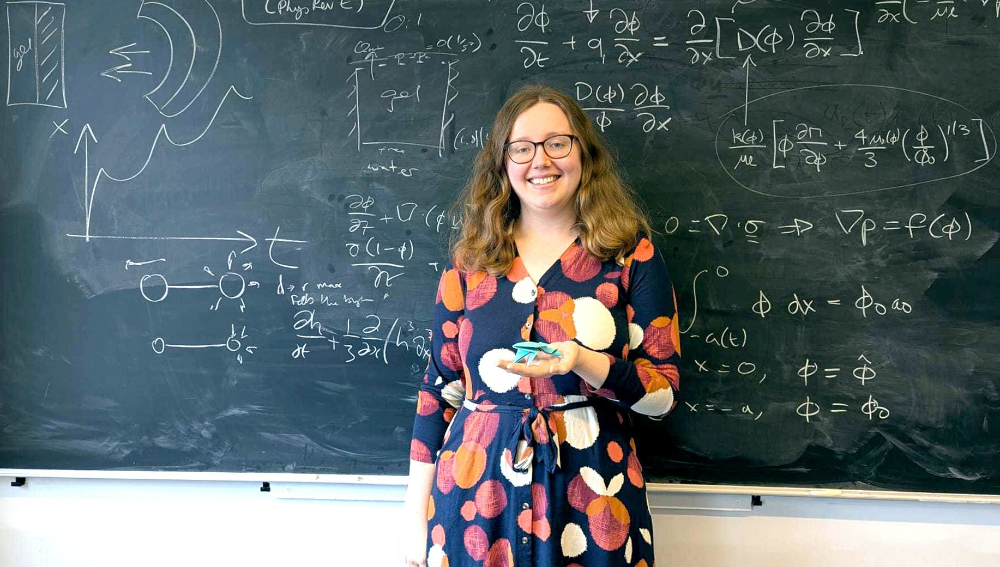

About

I am a Research Fellow at Mathematics Institute, University of Warwick, in Prof. Tom Montenegro-Johnson's group. My research focuses on using asymptotic methods for industrial and biological applications.
I received my PhD from UCL in 2023, where I worked on mathematical modelling of aircraft icing (supervised by Prof. Frank Smith FRS). I then received an LMS Early Career Fellowship to work on biological fluid mechanics with Prof. Sarah Waters at the University of Oxford. From 1 December 2026, I will be returning to Oxford to take up a Hooke Fellowship.
Research Interests
Aircraft icing
Modelling the motion of ice particles in high speed flow near aircraft surfaces.
Viscoelastic fluids
Modelling the behaviour of viscoelastic droplets in Newtonian flow, with a view to understanding cell mechanics.
Hydrogel mechanics
Modelling how hydrogels (soft, hydrophilic, porous materials) swell when adhered to surfaces or otherwise confined.
Contact
Email: ellen.jolley@warwick.ac.uk
Office:
Room C2.08, Zeeman Building
University of Warwick